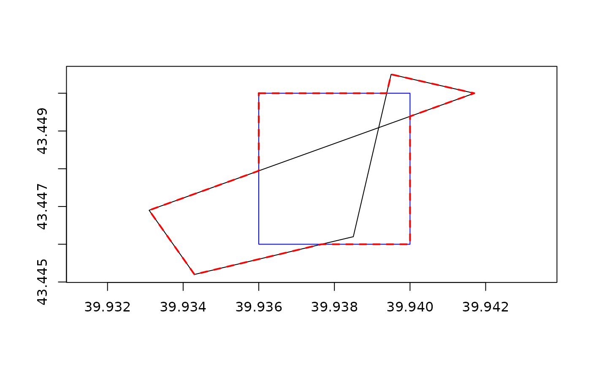
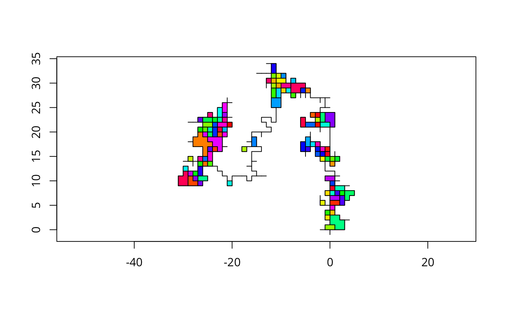
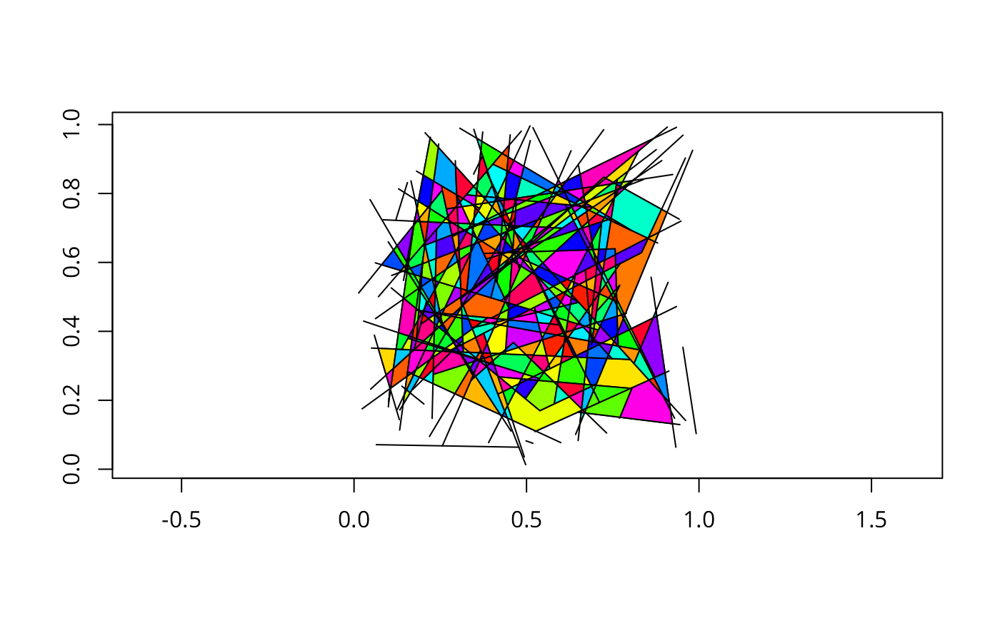

topo-unary-gNode.RdFunction attempts to node a linestring object, inserting coordinates at intersection points; only available for GEOS >= 3.4.0.
gNode(spgeom);an sp object inheriting from SpatialLines
Returns a noded linestring object.
Because gPolygonize expects linestrings to be fully noded, as such they must not cross and must touch only at endpoints. gNodee takes an object inheriting from SpatialLines and attempts to add omitted nodes. Issue reported by Nicola Farina 21 March 2014.
library(sp)
pol1 <- readWKT(paste("POLYGON((39.936 43.446, 39.94 43.446, 39.94 43.45,",
"39.936 43.45, 39.936 43.446))"))
pol2 <- readWKT(paste("POLYGON((39.9417 43.45, 39.9395 43.4505,",
"39.9385 43.4462, 39.9343 43.4452, 39.9331 43.4469, 39.9417 43.45))"))
plot(pol2, axes=TRUE)
plot(pol1, add=TRUE, border="blue")
gIsValid(pol1)
#> [1] TRUE
gIsValid(pol2)
#> Warning: Self-intersection at or near point 39.939171782762692 43.449088665879579
#> [1] FALSE
try(res <- gUnion(pol1, pol2))
#> Warning: Self-intersection at or near point 39.939171782762692 43.449088665879579
#> pol2 is invalid
#> Warning: Invalid objects found; consider using set_RGEOS_CheckValidity(2L)
#> Error in RGEOSBinTopoFunc(spgeom1, spgeom2, byid, id, drop_lower_td, unaryUnion_if_byid_false, :
#> TopologyException: Input geom 1 is invalid: Self-intersection at 39.939171782762692 43.449088665879579
if (version_GEOS0() > "3.4.0") {
pol2a <- gPolygonize(gNode(as(pol2, "SpatialLines")))
try(res <- gUnion(pol1, pol2a))
plot(res, add=TRUE, border="red", lty=2, lwd=2)
set.seed(1)
# rw from Jim Holtman's R-help posting 2010-12-2
n <- 1000
rw <- matrix(0, ncol = 2, nrow = n)
indx <- cbind(seq(n), sample(c(1, 2), n, TRUE))
rw[indx] <- sample(c(-1, 1), n, TRUE)
rw[,1] <- cumsum(rw[, 1])
rw[, 2] <- cumsum(rw[, 2])
slrw <- SpatialLines(list(Lines(list(Line(rw)), "1")))
res0 <- gNode(slrw)
print(length(slrw))
print(length(res0))
res <- gPolygonize(res0)
print(summary(res))
print(length(res))
plot(res0, axes=TRUE)
plot(res, add=TRUE, col=sample(rainbow(length(res))))
# library(spatstat)
# set.seed(0)
# X <- psp(runif(100), runif(100), runif(100), runif(100), window=owin())
# library(maptools)
# sppsp <- as(X, "SpatialLines")
# writeLines(writeWKT(sppsp, byid=FALSE), con="sppsp.wkt")
sppsp <- readWKT(readLines(system.file("wkts/sppsp.wkt", package="rgeos")))
plot(sppsp, axes=TRUE)
res0 <- gNode(sppsp)
res <- gPolygonize(res0)
plot(res, add=TRUE, col=sample(rainbow(length(res))))
}

#> [1] 1
#> [1] 1
#> Object of class SpatialPolygons
#> Coordinates:
#> min max
#> x -31 5
#> y 0 34
#> Is projected: NA
#> proj4string : [NA]
#> [1] 110

